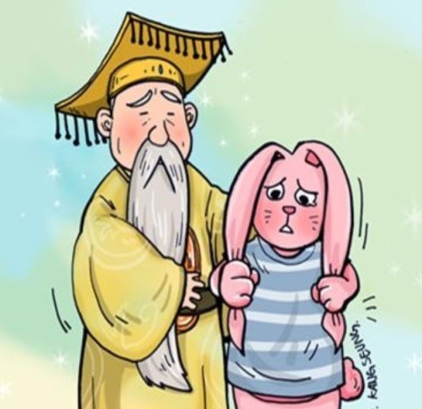
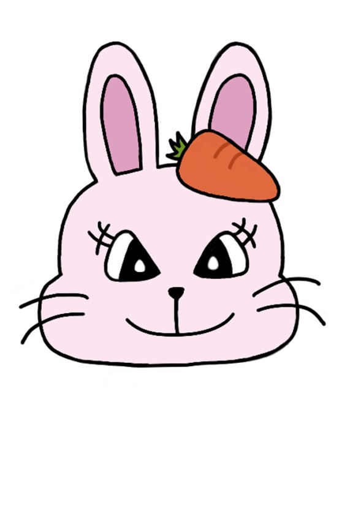
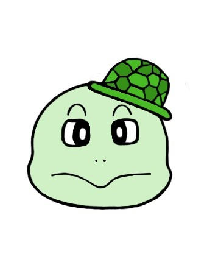

|  | 용왕님 | 용궁 세계를 다스리는 왕으로, 지배 계층을 상징하는 인물이다. 그러나 밤낮으로 잔치만 하다가 병을 얻을 정도로 부패하고, 병을 낫게 할 아무런 방법도 찾지 못하는 능력 없는 왕이다. 게다가 자신의 병을 치료하기 위해서 하찮은 토끼쯤은 죽어도 괜찮다는 전형적인 권력자의 모습을 가지고 있다. 물론 탐욕이 지나쳐 토끼의 꾀에 속아 넘어가는 한심한 인물이기도 하다. |
|  | 토끼 | 토끼는 산속의 위험한 생활에서 벗어나 벼슬을 하려는 욕심에 자라를 따라 용궁으로 가지만, 위기 앞에 당당히 맞서 스스로의 힘으로 목숨을 구할 만큼 영리하고 지혜롭다. 또 절대적인 권력을 가진 용왕과 맞서는 백성을 대표하며, 사건을 이끌어 가는 핵심적인 역할을 한다. 산속에서는 한없이 힘없고 연약하지만 용왕을 살리는 구원자로 나타나기도 하고, 자신의 생활로 돌아가 강인한 생명력으로 꿋꿋하게 살아가는 인물로도 표현된다. |
|  | 자라 | 처음부터 끝까지 우직한 성격을 유지하는 인물로, 판본에 따라서 《별주부전》이라 부를 만큼 토끼와 함께 이야기를 이끌어 가는 주인공이다. 육지에 가 토끼의 간을 구해 오겠다고 나서고, 토끼를 용궁으로 데려오는 역할을 성실히 해낸다. 하지만 토끼의 속임수에 빠질 만큼 어리석다. 용궁 세계의 지배 계층이지만, 주목 받지 못하는 하급 관리이다. 그러나 용왕에게 절대적인 충성을 바치는 신하이다. |